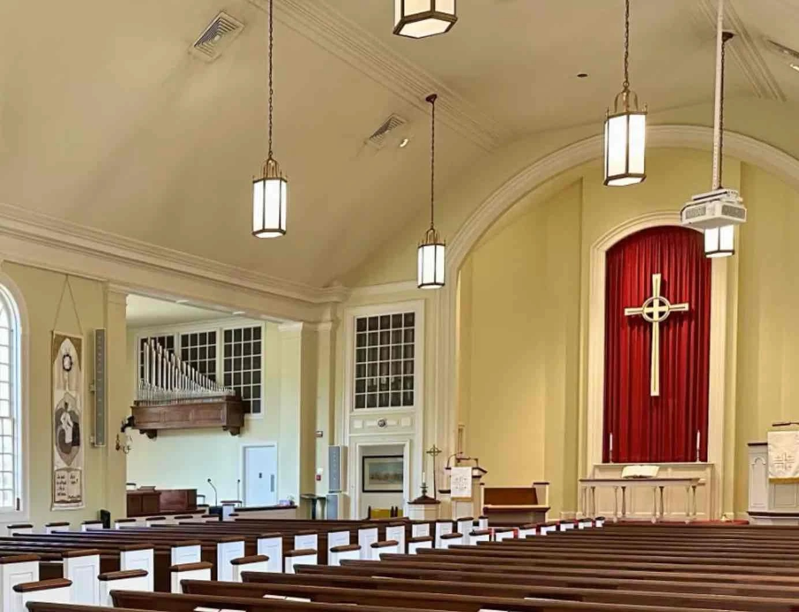

How long is it?
A full Sunday Liturgy runs around three hours, including morning prayers (Matins) and the Raising of Incense. Many families arrive partway through, and that is perfectly normal.
Whether you are Coptic, Orthodox from another tradition, or visiting a church for the first time, we would love to pray with you. Here is everything you need to feel at home on your first Sunday.

The Divine Liturgy is the heart of our life together, and the best time for a first visit.
Coptic worship is ancient, beautiful, and full of symbolism. You don’t need to understand it all. Come, watch, listen, and pray.
A full Sunday Liturgy runs around three hours, including morning prayers (Matins) and the Raising of Incense. Many families arrive partway through, and that is perfectly normal.
We stand for the Gospel reading and the most solemn prayers, and sit for the other readings and the sermon. Just follow those around you, and sit whenever you need to.
Prayers and hymns are chanted in English, Arabic, and Coptic, the last stage of the ancient Egyptian language. Screens or books help you follow along.
Communion is received by baptized Orthodox Christians who have prepared through fasting and confession. Visitors are warmly welcome to receive the eulogia, the blessed bread shared with everyone at the end of the Liturgy.
Before the Eucharistic prayers, the deacon invites everyone to “greet one another with a holy kiss.” We simply turn and greet those beside us with a handshake or a slight bow.
Modest, comfortable clothes are perfect. Some women cover their hair, especially for Communion, but visitors are never expected to. Come as you are.
Free parking is available on site. Please leave the spaces closest to the door for elderly parishioners and families with young children.
Children are a joyful part of our worship, and a little noise is welcome. A cry room and Sunday School are available during the Liturgy.
Stay for coffee and fellowship in the hall after the Liturgy. Say hello to Fr. Domadious. He loves meeting new faces.
The Coptic Orthodox Church is one of the oldest Christian churches in the world. It was founded in Alexandria, Egypt, by St. Mark the Apostle, the writer of the second Gospel, in the first century.
For nearly two thousand years it has kept the faith of the Apostles, the worship of the early Church, and a long tradition of saints, martyrs, and monastics. Today, Copts and friends of every background worship in Coptic churches across the world.
If you are curious about Orthodox Christianity, you are welcome to come and see, to ask questions, and to learn at your own pace. There is no pressure.
Not at all. St. Mary openly welcomes people of every race and nationality. Our parish includes families from many backgrounds, and English is used throughout our services.
Anywhere you are comfortable. In some Coptic churches, men and women traditionally sit on separate sides. If you notice this, feel free to follow it, but no one will mind either way.
Yes. Pray, sing, and listen with us. Holy Communion is reserved for Orthodox Christians, but everyone may receive the blessed bread (eulogia) at the end, and anyone may ask the priest for a blessing.
Start by coming to services and speaking with Fr. Domadious. Adults exploring Orthodoxy usually attend a period of instruction (catechesis) before being received into the Church.
Yes. Sunday School classes meet for children and teens. See Sunday School for ages and times.
Of course. Most of our services stream live on YouTube, and past sermons are in our Sermon Library.